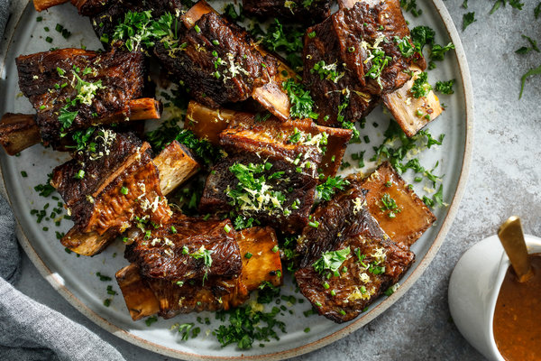

Red Wine Braised Short Ribs

Red Wine Braised Short Ribs (7 Servings)
Prep Time: 25 mins
Cook Time: 3 hrs
Ingredients
- 6lb. beef short ribs (bone-in)
- Sea salt and black pepper
- 1 tbsp tomato paste
- 4 tbsp olive oil
- 4 tbsp flour
- 7 sprigs thyme
- 3 sprigs oregano
- 3 sprigs rosemary
- 3 fresh or dried bay leaves
- 11 sprigs flat-leaf parsley
- 1 quartered head of garlic
- 4 onions, chopped
- 4 carrots, chopped
- 4 cups low-sodium chicken stock
- 1 bottle of red wine (Cabernet Sauvignon)
Instructions
- Preheat oven to 350 degrees. Coat short ribs in salt and pepper. Place olive oil in oven at medium-high heat. Working in a couple batches, golden-brown short ribs from all sides, taking 10min per batch. Transfer ribs to a large dish. Save 4 tbsp drippings from the pot, discard the rest.
- Add carrots and onions to pot, cooking at medium-high heat. Stir frequently, check until onions are browned, about 6min. Place tomato paste and flour into the pot. Stir often, until well integrated and flush with red, about 3min. Slowly add wine, then mix in short ribs. Do not cover, while bringing to a boil. Once boiling, lower heat to medium and simmer until wine volume is halved, about 20min. Toss garlic and herbs into pot. Stir in chicken stock. Bring back to a boil, then cover, and finally place into oven.
- Let short ribs cook until tender, 2½ hours. Transfer them to a platter. Strain sauce into a measuring cup. Remove fat from surface of sauce with a spoon to discard. Add salt and pepper to sauce until satisfactory. Serve short ribs in bowls over white rice or mashed potatoes, based on preference. Spoon sauce over the dish as desired.